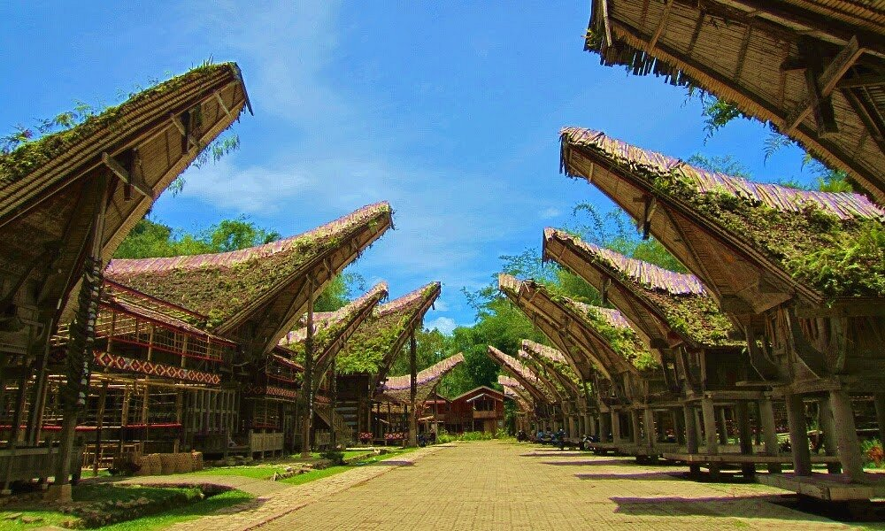
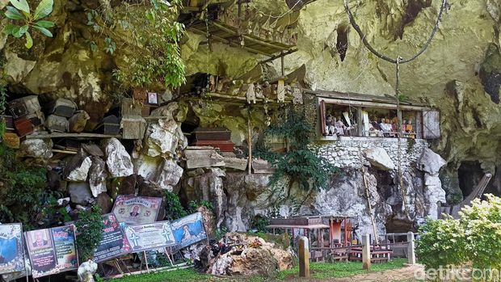
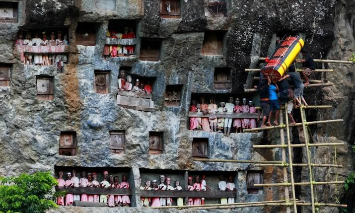
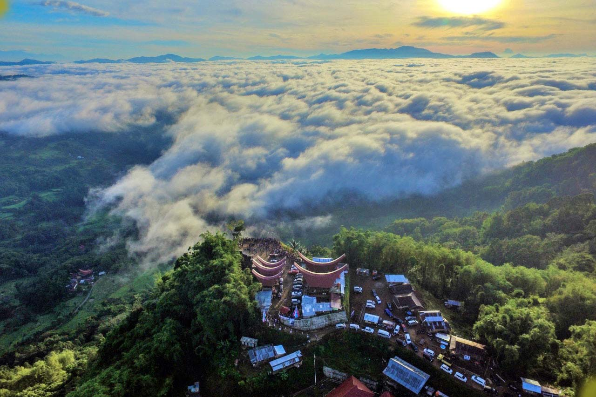

Mengenal Tana Toraja
Tana Toraja adalah salah satu kabupaten di Provinsi Sulawesi Selatan yang mendunia berkat kekayaan budayanya. Destinasi ini sangat identik dengan ritual pemakaman yang megah (Rambu Solo'), deretan rumah adat beratap melengkung yang disebut Tongkonan, serta kuburan di tebing batu yang khas.
Berada di daerah pegunungan yang sejuk, Tana Toraja tidak hanya menawarkan wisata budaya dan sejarah magis, tetapi juga keindahan alam berupa hamparan sawah terasering dan kabut awan di dataran tinggi.
Galeri Destinasi Pilihan




Daftar Aktivitas Menarik
Berikut adalah hal-hal seru yang wajib Anda lakukan saat berkunjung:
- Menyaksikan kemegahan arsitektur di kompleks Tongkonan.
- Menjelajahi misteri gua makam dan memelajari sejarah budaya pemakaman Toraja.
- Menyaksikan Upacara Adat Rambu Solo' (biasanya ramai di pertengahan atau akhir tahun).
- Menikmati secangkir kopi Toraja murni di dataran tinggi.
- Berburu suvenir kain tenun khas Toraja dan ukiran kayu.
Informasi Lokasi & Akses Perjalanan
Kawasan utama pariwisata Toraja berpusat di Makale dan Rantepao, yang berjarak sekitar 300 kilometer dari Makassar. Ada dua cara populer menuju Tana Toraja:
- Jalur Darat (Bus Malam): Perjalanan menggunakan bus eksekutif memakan waktu sekitar 8-9 jam. Bus dilengkapi fasilitas kursi rebah (sleeper) yang nyaman.
- Jalur Udara (Pesawat): Terdapat rute penerbangan ke Bandara Buntu Kunik (Tana Toraja) dengan waktu tempuh udara yang sangat singkat.
Tabel Informasi Harga Tiket Masuk
| No | Nama Objek Wisata | Harga Tiket (WNI) | Harga Tiket (WNA) |
|---|---|---|---|
| 1 | Desa Adat Ke'te' Kesu' | Rp 15.000 | Rp 30.000 |
| 2 | Makam Batu Londa | Rp 15.000 | Rp 30.000 |
| 3 | Tebing Makam Lemo | Rp 15.000 | Rp 30.000 |
| 4 | Kawasan Lolai (Negeri di Atas Awan) | Rp 15.000 | Rp 15.000 |
Video Dokumenter Singkat
Simak cuplikan keindahan destinasi wisata Toraja di bawah ini:
Formulir Pendaftaran Tur
Tertarik berkunjung ke Toraja? Isi form di bawah untuk dihubungi oleh agen travel lokal kami.